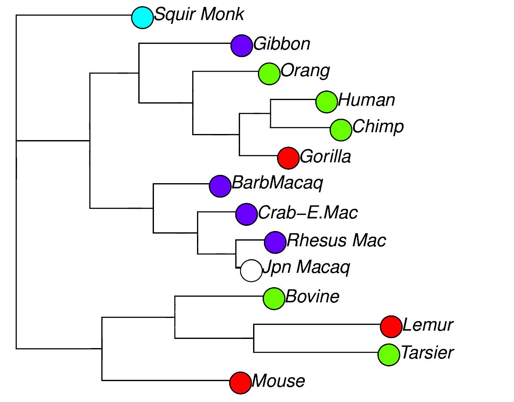
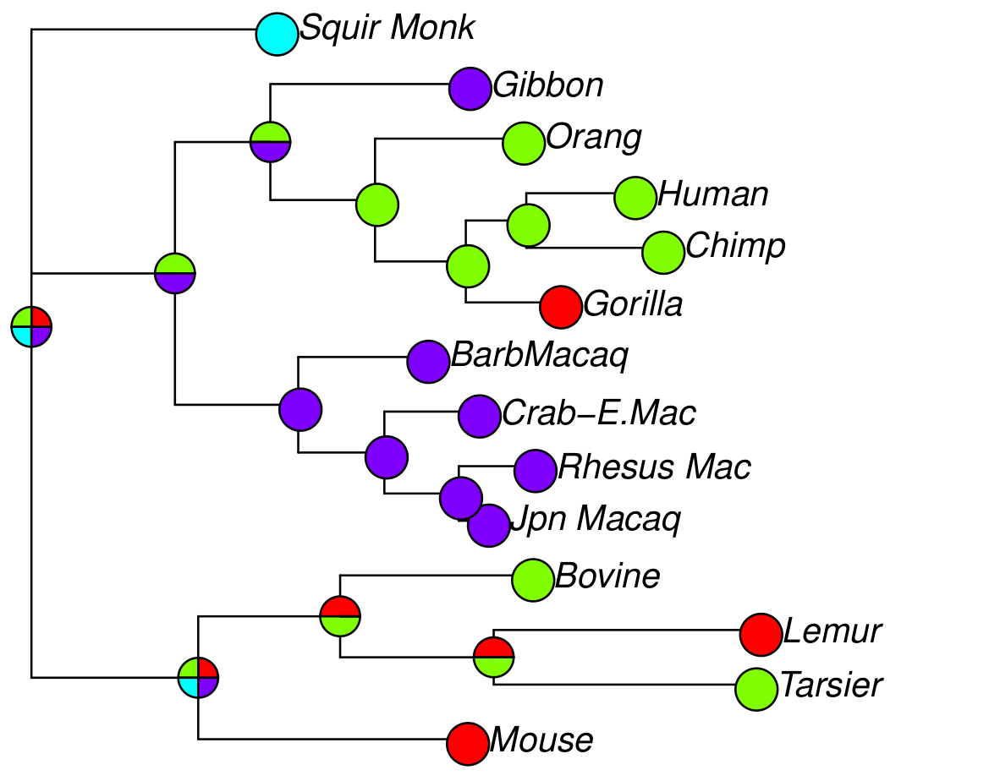

Peroba software for SARS-CoV2 phylogenetic analysis
Leonardo de Oliveira Martins
group meeting 2020.08.06
Overview
- COGUK official software
- peroba (database, backbone, and report)
- global lineages (A, B, etc.)
- local lineages (UK200, UK51, etc.)
Official repositories
- https://github.com/COG-UK: civet
- https://github.com/cov-ert: clusterfunk
- https://github.com/cov-lineages: pangolin, llama
Peroba
peroba on github
peroba_database
- Output HTML: pandas_profiling
peroba_backbone
trim_sequences(trim=[265, 29675]) #
snpsites_from_alignment() # some functions work with SNPs only
remove_low_quality() # sequences with excess "N"
remove_duplicates() # remove identical sequences
reduce_redundancy() # remove sequences with same metadata
find_neighbours_ball(blocks = 1500, dist_blocks = 3, nn = 5)
find_neighbours_paf (blocks = 2000, n_segments = 1, nn = 10)
rapidnj_from_alignment() # crude tree estimate
- Trees can then be optimised with fasttree and iqtree
peroba_report
- internal nodes, for clustering
- tips, for sequences not classified
 
Peroba software
peroba on github
custom analysis